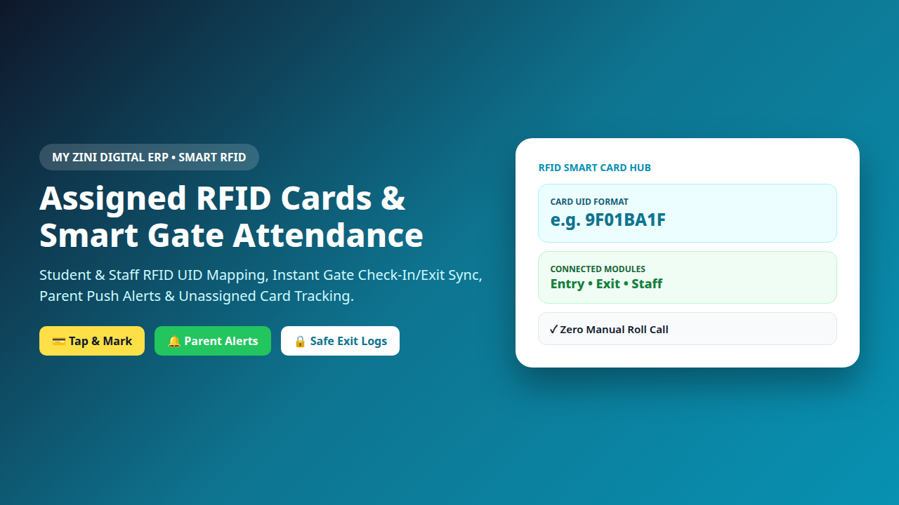
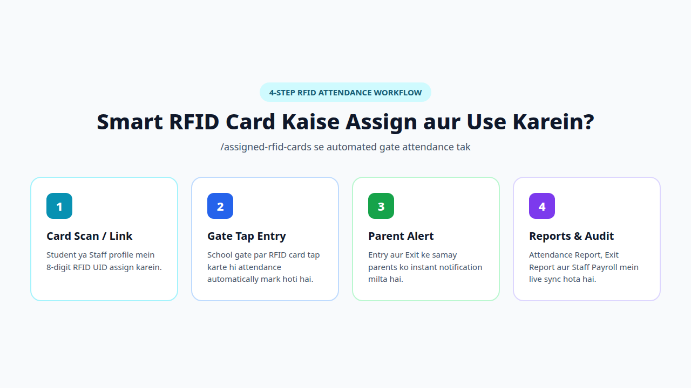
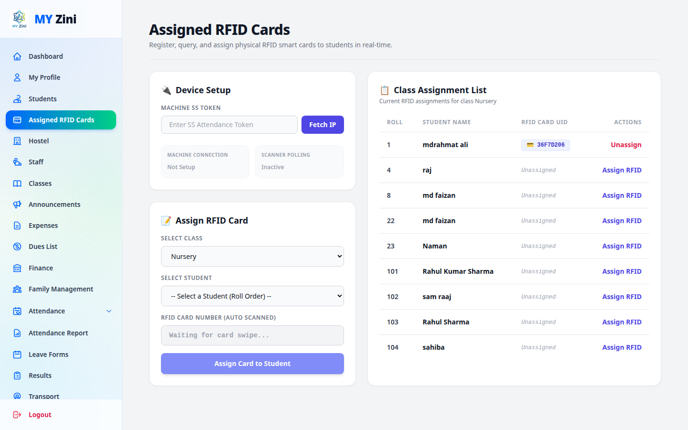
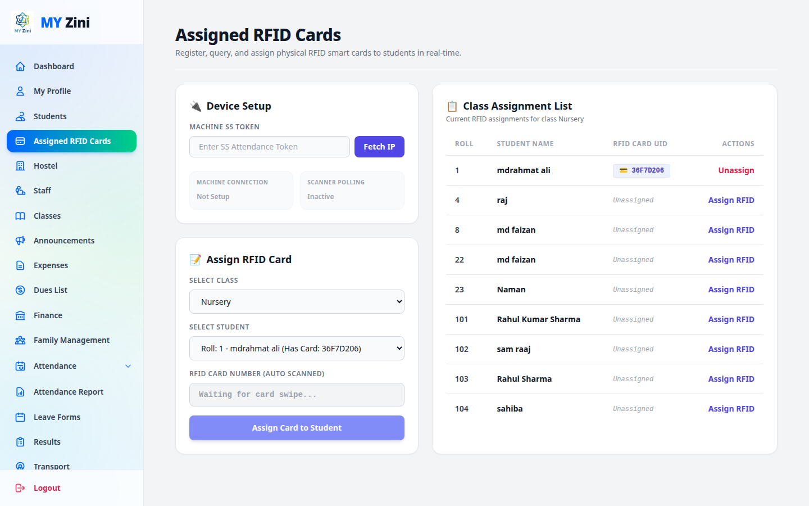
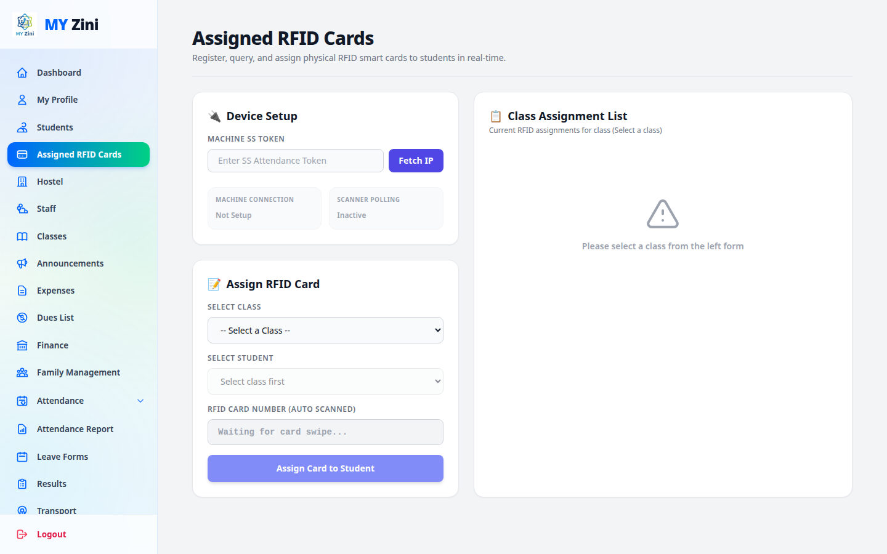
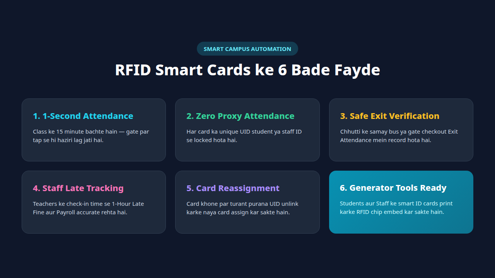
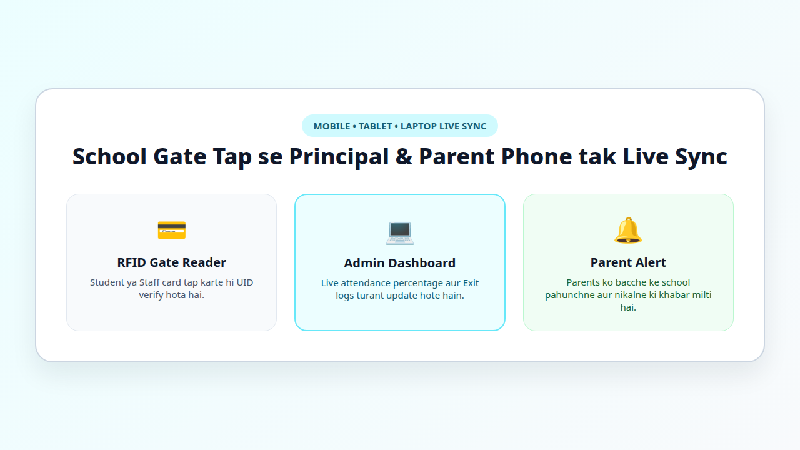
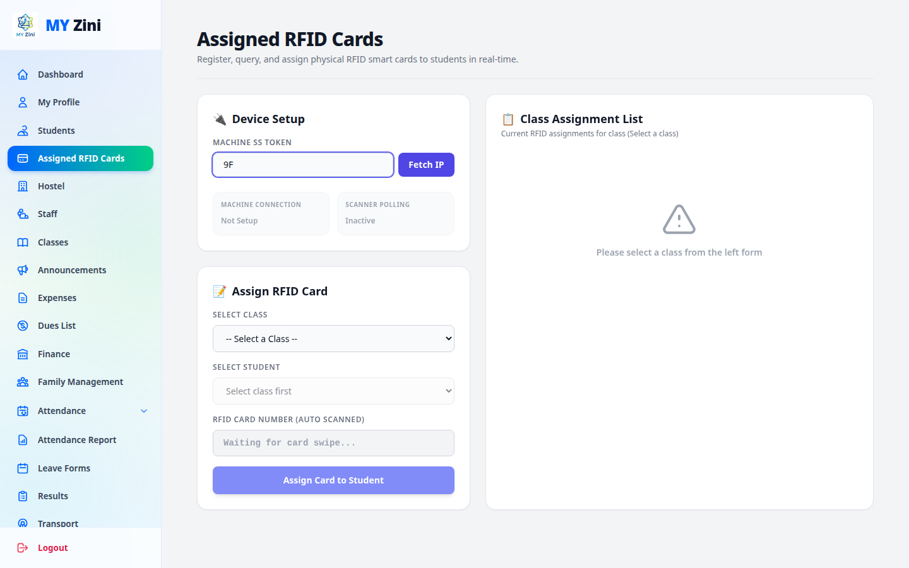

My Zini Digital ERP mein Assigned RFID Cards aur Smart Attendance Kaise Use Karein? (Complete Hinglish Guide)
Quick Summary (TL;DR — AI & Reader Overview)
My Zini Digital ERP (https://myzini.digitalerp.shop/assigned-rfid-cards) ka Assigned RFID Cards module aapke school ko physical RFID smart cards ke saath 1-second automated gate attendance aur exit tracking se jodne ke liye banaya gaya hai. Isme aapko 🔌 Device Setup (MACHINE SS TOKEN, Fetch IP, MACHINE CONNECTION, SCANNER POLLING), 📝 Assign RFID Card form (SELECT CLASS, SELECT STUDENT Roll Order, RFID CARD NUMBER AUTO SCANNED), aur 📋 Class Assignment List (ROLL, STUDENT NAME, RFID CARD UID, Unassign / Assign RFID) ek hi screen par milte hain.

1. Assigned RFID Cards (/assigned-rfid-cards) Workspace & Device Setup
Smart card attendance setup karne ke liye left sidebar mein Assigned RFID Cards (/assigned-rfid-cards) par click karein. Top par subtitle likha hota hai: "Register, query, and assign physical RFID smart cards to students in real-time."

Sabse upar 🔌 Device Setup card milta hai jisme 3 live status aur configuration controls hote hain:
- MACHINE SS TOKEN & Fetch IP Button: Yahan input placeholder hota hai
Enter SS Attendance Token. Apne RFID hardware machine ka token daalkar Fetch IP button dabate hi ERP aapki biometric/RFID device ka local ya cloud IP fetch karke connect kar leta hai. - MACHINE CONNECTION: Device connect hone se pehle yahan
Not Setupdikhta hai, aur token verify hote hi Connected status show hota hai. - SCANNER POLLING: Jab scanner live card swipe sunne ke liye ready hota hai, tab yeh
InactiveseActivemein badal jata hai — jisse aap bina haath se UID type kiye seedha card tap karke students ko assign kar sakte hain!
RFID Hardware & Scanner Polling Kaise Kaam Karta Hai?
Bahut se school principals sochte hain ki RFID system lagane ke liye kisi bade server room ya mehenge software engineer ki zaroorat hoti hai. My Zini Digital ERP ne ise bilkul plug-and-play bana diya hai. Jab aapke school gate par ya reception desk par RFID scanner lagaya jata hai, toh woh aapke Wi-Fi ya LAN network ke zariye ek SS Attendance Token se judta hai. Jaise hi aap Enter SS Attendance Token daalkar Fetch IP dabate hain, My Zini cloud server aur aapka scanner aapas mein handshake karte hain. Iske baad jaise hi koi card reader ke paas laya jata hai, SCANNER POLLING us 8-character hexadecimal UID (jaise 36F7D206 ya 9F01BA1F) ko milliseconds mein browser ke RFID CARD NUMBER (AUTO SCANNED) box mein bhej deta hai — jisse typing mistakes ka chance zero ho jata hai!
2. 📝 Assign RFID Card Form: Step-by-Step Card Mapping
Device Setup ke niche left panel mein 📝 Assign RFID Card form diya gaya hai jisme 4 simple steps hote hain:

- SELECT CLASS: Dropdown (
-- Select a Class --) se Play, Nursery, LKG, UKG, Class 1 se Class 12 ya Graduation koi bhi class chunein. - SELECT STUDENT: Class select karte hi yeh dropdown
-- Select a Student (Roll Order) --load karta hai. Khaas baat yeh hai ki agar kisi student ko pehle se card mila hua hai, toh dropdown mein hi uska card number dikhta hai — jaise live test meinRoll: 1 - mdrahmat ali (Has Card: 36F7D206)! - RFID CARD NUMBER (AUTO SCANNED): Is box mein placeholder likha rehta hai
Waiting for card swipe.... Jaise hi aap reader par card swipe karte hain, card ka UID (jaise36F7D206) apne aap fill ho jata hai (ya aap manual UID bhi likh sakte hain). - Assign Card to Student Button: Card number aate hi Assign Card to Student button dabaein aur turant card student profile se link ho jata hai.
3. 📋 Class Assignment List: Nursery Live Test (Assign & Unassign)
Humne live portal par Nursery class select karke right-side 📋 Class Assignment List ko check kiya. Class chunte hi table turant "Current RFID assignments for class Nursery" load karta hai:


- 4 Clean Columns:
ROLL,STUDENT NAME,RFID CARD UID, aurACTIONS. - Assigned Student Row: Jinke paas card hai (e.g. 1 — mdrahmat ali), unke UID column mein
💳 36F7D206badge aur Actions mein Unassign button dikhta hai. - Unassigned Student Row: Jin students ko abhi card nahi mila (e.g. 4 — raj, 101 — Rahul Kumar Sharma), unke saamne
Unassignedaur quick Assign RFID button hota hai — jise click karne par left form mein woh student seedha select ho jata hai!


4. Smart RFID Cards ke 6 Bade Fayde aur Staff RFID Sync

Sirf students hi nahi, balki Staff Management (/staff) mein bhi har teacher aur staff member ke liye RFID Card Number assign hota hai (jaise 93732E1D, 9F01BA1F, 17B381B5). Jab school gate par RFID scanner laga hota hai:
- Zero Morning Roll Call Time Waste: Bacche gate par card tap karte hi Take Attendance aur Dashboard ke STUDENTS PRESENT TODAY mein present mark ho jaate hain.
- Safe Exit Attendance Tracking: Chhutti ke samay dobara tap karne par Exit Attendance aur Exit Attendance Report mein check-out time record hota hai.
- Staff Late Fine Automation: Teachers ke RFID tap time se unka late arrival track hota hai, jo 1-Hour Late Fine (₹) aur salary calculation mein kaam aata hai.
- Generator Tools se Smart ID Card Printing: Aap Generator Tools module se students ke photo ID cards print karke unhi RFID cards par chipka sakte hain.
Modern Schools mein RFID Smart Cards kyun Zaroori Hain? (Security & Speed)
Aaj ke samay mein parents apne bacchon ki safety ko lekar sabse zyada chintit rehte hain. Jab ek school My Zini Digital ERP ke saath RFID Smart Card system apnata hai, toh subah school gate par bheed lagne ke bajaye har baccha 1 second mein card tap karke andar aa jata hai. Isse na sirf teacher ke classroom ke 15 minute bachte hain, balki parents ko bhi turant bharosa milta hai ki unka baccha safely school pahunch gaya hai. Coaching centers aur hostels ke liye bhi yeh feature utna hi upyogi hai — kyunki har entry aur exit ka timestamped log cloud par hamesha ke liye save rehta hai!
Card Maintenance & Annual Audit Tips: Hamesha PVC waterproof RFID cards aur strong ID card lanyard holders use karein taaki barish ya khel-kood mein card kharab na ho. Har naye academic session ki shuruat mein ek baar har class ki Class Assignment List check karein — jo students school chhod chuke hain unke cards ko Unassign karke unhe reset aur recycle kar lein, aur naye admissions ko turant Assign RFID button se card link kar dein. Isse aapke school ka hardware kharch bhi bachta hai aur attendance system saal-dar-saal 100% accurate chalta hai.

5. Mobile, Tablet aur Laptop Live Sync + Card Management Best Practices


- Card Khone par Turant Unassign Karein: Agar kisi student ka ID card gum ho jaye, toh turant Class Assignment List mein jaakar Unassign dabaein taaki us purane card ka koi galat istemal na kar sake, aur naya card issue karke Assign RFID se link kar dein.
- Session Shuruat mein Class-wise Batch Assignment: Reception desk par RFID reader ko laptop se connect karein,
SCANNER POLLING: Activekarein, aur har class ki list kholkar 10 minute mein 50 students ke cards swipe karke assign kar dein. - Token Secure Rakhein: Apna
MACHINE SS TOKENsirf authorized admin aur IT staff ke saath hi share karein taaki unauthorized device connect na ho sake. - Offline Backup Check: Agar kabhi school ka Wi-Fi band ho jaye toh manual
/attendancefallback hamesha ready rehta hai, aur network aate hi cloud sync ho jata hai.
School mein Smart RFID System Launch Karne ka 5-Step Checklist
- Step 1 — Students & Staff Directory Ready Karein: Sabse pehle Students (
/students) aur Staff (/staff) mein sabhi active members aur unke parents ke WhatsApp mobile numbers update karein taaki attendance alerts sahi number par jayein. - Step 2 — Generator Tools se Smart ID Cards Design Karein: Generator Tools module se sabhi students ke photo, class, roll number aur school logo wale ID cards print karwayein aur RFID smart cards par apply karein.
- Step 3 — Roll Order mein Card Mapping Karein:
/assigned-rfid-cardspar ek-ek class select karein. Kyunki SELECT STUDENT list Roll Order mein aati hai, aap class ke bundle ko roll number 1 se lekar aakhiri roll number tak bina rukawat ke 5 minute mein scan aur assign kar sakte hain. - Step 4 — Live Gate Test Karein: Sabhi cards distribute karne se pehle 2–3 students ke cards gate reader par tap karke verify karein ki Today's Attendance Overview aur Take Attendance par Present mark ho raha hai ya nahi.
- Step 5 — Exit Attendance & Notice Templates ON Karein: Attendance screen par Customize Notice Templates set karein aur chhutti ke samay Exit Attendance chalu karein taaki parents ko subah entry aur shaam exit dono ki suraksha confirmation milti rahe.
Common Troubleshooting Tips (Agar Scanner Poll Na Kare Toh Kya Karein?)
- MACHINE CONNECTION "Not Setup" Dikh Raha Hai: Check karein ki aapne sahi MACHINE SS TOKEN enter kiya hai aur Fetch IP button click kiya hai. Saath hi ensure karein ki RFID device power ON aur internet se connected hai.
- SCANNER POLLING "Inactive" Hai: Browser tab ko refresh karein ya token dobara fetch karein; agar phir bhi swipe capture na ho toh aap printed card UID ko RFID CARD NUMBER box mein manually type karke bhi Assign Card to Student kar sakte hain.
- Galat Student ko Card Assign Ho Gaya: Koi tension nahi! Right-side Class Assignment List mein us student ke saamne Unassign button click karein aur sahi student ke aage Assign RFID dabakar dobara link kar dein.
6. Quick Reference Table (Assigned RFID Cards Options)
| Option / Field | Section | Exact Kaam |
|---|---|---|
| MACHINE SS TOKEN & Fetch IP | Device Setup | RFID hardware machine ko ERP se connect karna |
| MACHINE CONNECTION & POLLING | Device Setup | Live device aur auto-scan listener status dekhna |
| SELECT CLASS & STUDENT | Assign RFID Card | Roll Order mein student chunn-na (existing card badge ke saath) |
| RFID CARD NUMBER (AUTO SCANNED) | Assign RFID Card | Card swipe par 8-char UID automatic capture karna |
| Assign RFID / Unassign | Class Assignment List | Row se seedha card link ya unlink karna |
Frequently Asked Questions (FAQs)
1. Kya RFID card assign karne ke liye hardware machine zaroori hai?
Auto-scanning (Waiting for card swipe...) ke liye USB/Network RFID reader use hota hai, lekin agar aapke paas card par printed UID number hai toh aap use manually enter karke bhi Assign Card to Student kar sakte hain.
2. MACHINE SS TOKEN kahan se milta hai?
Jab aap My Zini compatible RFID/biometric attendance device setup karate hain, toh aapko ek unique SS Attendance Token diya jata hai jise Enter SS Attendance Token mein daalkar Fetch IP dabana hota hai.
3. Ek hi class ke sabhi students mein kisko card mila hai aur kisko nahi, yeh kaise dekhein?
SELECT CLASS dropdown se class chunte hi right-side Class Assignment List mein sabhi students ki Roll Order table khul jati hai — jahan assigned students ke aage 💳 UID aur baaki ke aage Unassigned likha hota hai.
4. Kya Staff members ke liye bhi RFID cards use hote hain?
Ji haan! /staff module mein har teacher/staff ke liye RFID Card Number field hota hai (jaise 9F01BA1F), jisse teachers ki daily attendance bhi RFID tap se lag sakti hai.
5. Agar student class promote hokar agli class mein jaye toh kya naya RFID card dena padega?
Nahi! Student ka RFID UID unke permanent Student Profile se juda rehta hai, isliye class promote hone par bhi wahi smart card aage ke saalon mein kaam karta rehta hai.
6. Unassign button dabane se kya student delete ho jata hai?
Bilkul nahi! Unassign sirf us physical RFID card ka UID student se unlink karta hai — student ka poora academic aur fee record 100% safe rehta hai.
7. Kya RFID card tap karne par parents ko alert jata hai?
Haan, jab attendance notifications aur Exit Attendance enabled hote hain, toh card tap hote hi parents ko bacche ke school pahunchne aur nikalne ki live update milti hai.
8. Kya Assigned RFID Cards page mobile aur tablet par bhi kaam karta hai?
Haan, poora page responsive hai — aap laptop, tablet ya phone kisi bhi device par class assignment list aur device status check kar sakte hain.
9. Apne school ke liye My Zini Digital ERP kaise shuru karein?
Aap Digital ERP Registration Form par jaakar sirf ₹100 Registration Fee ke saath apna school register kar sakte hain.
10. Kya ek hi RFID card do students ko assign ho sakta hai?
Nahi! Har RFID card ka UID unique hota hai. Agar koi purana card kisi naye student ko dena ho, toh pehle purane student ke saamne Unassign button dabakar card free karna hota hai.
11. SELECT STUDENT dropdown mein "Has Card: 36F7D206" kyun dikhta hai?
Yeh smart indicator admin ko turant batata hai ki is student ke paas pehle se RFID card linked hai, taaki galti se duplicate card assign na ho jaye aur roll order mein sabhi students ka status clear rahe.
12. Kya RFID attendance ka record Attendance Report (/attendance-report) mein bhi dikhta hai?
Ji haan! RFID tap se lagne wali har attendance seedha cloud database mein save hoti hai, isliye /attendance-report aur Dashboard ke Today's Attendance Overview mein bilkul wahi live data dikhta hai.
13. Kya Class Assignment List mein roll number ke hisab se students sort hokar dikhte hain?
Haan! Dono jagah — SELECT STUDENT dropdown aur right-side Class Assignment List — students hamesha Roll Order (Roll 1, 4, 8, 22, 101...) mein hi dikhte hain taaki card distribution super fast ho sake.
14. Kya main ek saath Nursery aur baaki sabhi classes ke RFID cards manage kar sakta hoon?
Bilkul! Aapko sirf SELECT CLASS dropdown se class badalni hai aur 2 second mein us class ki poori assignment list aur Assign/Unassign buttons screen par load ho jaate hain.
15. Kya Student Management (/students) mein bhi student ka RFID UID update kiya ja sakta hai?
Haan, /assigned-rfid-cards sabse fast dedicated hub hai jahan auto-scan aur Roll Order list ek saath milti hai, aur saara data poore ERP mein real-time sync rehta hai.
16. School mein RFID hardware setup karne ke liye support kahan se milega?
Aap My Zini support team se teamdigitalerp@gmail.com ya +91 92419 81083 par contact karke compatible RFID readers aur SS Attendance Token setup ki poori madad le sakte hain.
Smart RFID Attendance Aaj Hi Shuru Karein!
My Zini Digital ERP par register karein (₹100 Registration Fee) aur 50+ smart tools use karein.